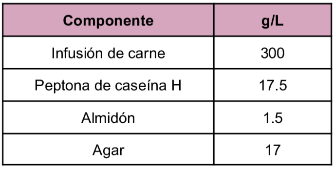
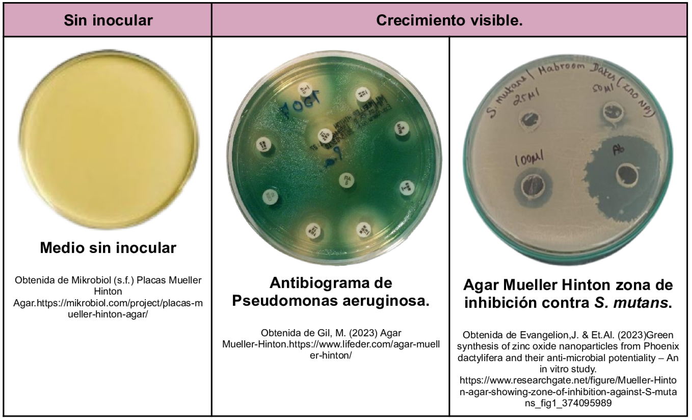

Medio utilizado para pruebas de susceptibilidad a antimicrobianos y el aislamiento de gonococos. Dentro de la composición del medio se encuentra la infusión de carne que aporta nitrógeno, vitaminas, carbono y aminoácidos por su parte el almidón absorbe cualquier metabolito tóxico.
Composición

pH a 25°C 7.4±0.2
Resultados Posibles
Se pueden observar distintos desarrollos bacterianos y distintos halos de inhibición según el antibiótico utilizado.

Referencias
MCD Lab (2025) Agar Mueller Hinton. https://mcd.com.mx/index.php?controller=attachment&id_attachment=26727